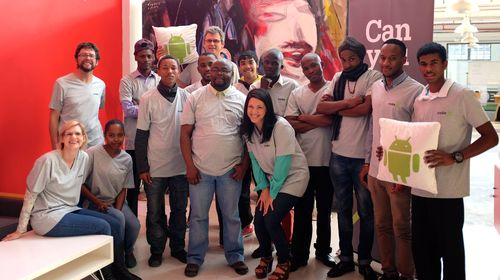

We are at Codex inorder to learn & gain coding skills and become better programmers and developers. Africa is at the dawn of a technological revolution, and this is a conversation we want to actively be a part of. We learn to create a number of things such as software as well as broadening our knowledge about the Tech industry.
CodeX is the best place to groom future coders. We get an opportunity to fine tune our skills through figuring out what works and what doesn't in the industry.
This is a suitable platform to explore our raw, and undiscovered talents. It also deploys young, and ambitious developers to the real world. There aren't any tests, exams or tutors. This is the real world. This is Codex.
Our team consists of Sihle, Khululekani and Ndabenhle. Three individuals from differing backgrounds but with one sole goal in mind; to be inducted into the Cape Town tech scene. Through blood sweat and tears, we will push ourselves to the limits. The team name "Kusinda" is a combination of all our names. Team Kusinda is a team of winners. Team Kusinda shall not falter.